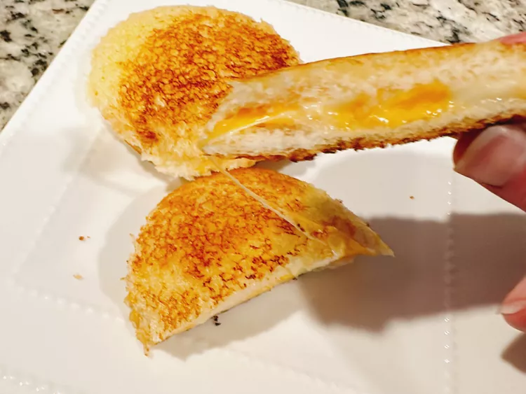

Crustless Grilled Cheese

If you like grilled cheese, but dont like the burnt
edges, this recipe is for you!
Ingredients
- 8 slices of white bread
- 4 slices of cheddar cheese
- 2 tablespoons of softened butter
Steps
- Spread a thin layer on each side of the bread
- Using a round cookie cutter that is slightly smaller
than the sandwich sealer, press out round slices of cheese.
Lay 4 slices of bread on a work surface, buttered side down.
Place a cheese round in the center of each slice.
Top with remaining 4 bread slices, buttered side up
- Center a sandwich sealer over a sandwich, press the sealer down,
and hold it in place to seal the edges, 15 to 30 seconds.
Pull the crusts away from the sealer; discard.
Repeat with remaining sandwiches
- Place sandwich discs on a parchment-lined baking sheet and freeze
for 2 hours before transferring into a freezer bag
- Preheat the air fryer to 380 degrees F. Cook frozen sandwiches until golden,
about 5 minutes. If sandwiches are thawed, cook 3 minutes at
370 degrees F